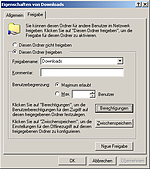
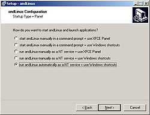
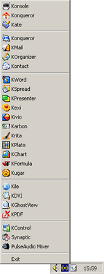
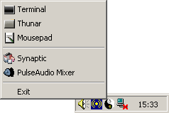
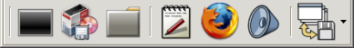
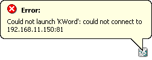

andLinux
Hinweis:
AndLinux wird nicht mehr weiterentwickelt. Alternativ kann aber coLinux in Verbindung mit speedLinux genutzt werden, das sich an andLinux orientiert. SpeedLinux wird standardmäßig mit Xubuntu 12.04 (Xfce) ausgeliefert, eine KDE-Version ist in Arbeit (siehe Speedlinux-Wiki  ).
).
Wie oft vermisst man als Linux-Anwender unter Windows die gewohnten Programme seiner Linux-Distribution? Einige Anwendungen wie Firefox, OpenOffice.org oder Pidgin gibt es auch nativ für Windows, aber auf andere wie Konqueror oder Nautilus kann man nur über ein in einer Virtuellen Maschine installiertes Linux-System zugreifen. Hier geht andLinux einen anderen Weg, indem es Linux-Programme unter Windows fast nativ zur Verfügung stellt. Außerdem startet andLinux deutlich schneller als eine virtuelle Maschine.
andLinux  ist ein Zusammenspiel von verschiedenen Programmen, die Linux-Funktionalitäten unter Windows-Systemen bereitstellen sollen. Die Basis bildet Cooperative Linux (kurz CoLinux), welches den Linux-Kernel für Windows portiert hat und so die Linux-Programme nativ laufen lassen kann. Für die grafische Anzeige wird Xming benutzt, das den X Window Server unter Windows zur Verfügung stellt. Zu guter Letzt sorgt PulseAudio für eine Sound-Ausgabe. Diese drei Programme wurden zusammen mit Ubuntu 7.10 als KDE- und XFCE-Version zu der Anwendung andLinux zusammengeschnürt.
ist ein Zusammenspiel von verschiedenen Programmen, die Linux-Funktionalitäten unter Windows-Systemen bereitstellen sollen. Die Basis bildet Cooperative Linux (kurz CoLinux), welches den Linux-Kernel für Windows portiert hat und so die Linux-Programme nativ laufen lassen kann. Für die grafische Anzeige wird Xming benutzt, das den X Window Server unter Windows zur Verfügung stellt. Zu guter Letzt sorgt PulseAudio für eine Sound-Ausgabe. Diese drei Programme wurden zusammen mit Ubuntu 7.10 als KDE- und XFCE-Version zu der Anwendung andLinux zusammengeschnürt.
Installation¶
Die Installation ist ziemlich simpel. Von der andLinux-Downloadseite kann man sich andLinux als Minimalversion mit XFCE-Oberfläche (143 MB) oder als Vollversion mit KDE-Oberfläche (665 MB) herunterladen. Beides sind ausführbare exe-Dateien, die man nach dem Download unter Windows 2000, Windows XP, Windows 2003, Windows Vista oder Windows 7 (alles nur für 32-bit-Systeme) einfach durch einen Doppelklick installieren kann.
Die Installation beider Versionen läuft ziemlich ähnlich ab. Zuerst bestimmt man, wie viel Speicher man andLinux zur Verfügung stellen will. 512 MB sollten hierbei meistens ausreichend sein. Die Frage im nächsten Fenster, ob der Sound aktiviert werden soll, kann man mit "yes" beantworten.

Etwas komplizierter ist der Zugriff auf die Dateien des Windows-Systems. Die Kommunikation zwischen andLinux und Windows findet über eine Netzwerkverbindung statt. Aus diesem Grund muss man wie unter einem herkömmlichen Linux-System eine Samba-Freigabe erzeugen, auf die andLinux dann zugreifen kann. Hierfür  -klickt man im Windows Explorer auf den jeweiligen Ordner und wählt "Freigabe". Dort wählt man den Reiter "Freigabe" an und erstellt einen eindeutigen Bezeichner ("Freigabename") ohne Sonder- oder Leerzeichen zur Identifikation. Gegebenenfalls kann man auch noch spezielle Zugriffsrechte setzen. In andLinux wählt man während der Installation bei "Windows File Access" den Eintrag "using Samba" aus. Im nächsten Fenster gibt man dann den eindeutigen Bezeichner an sowie den Namen und das Passwort des Benutzers, der darauf zugreifen darf (im Regelfall sind dies die Daten des angemeldeten Windows-Benutzers).
-klickt man im Windows Explorer auf den jeweiligen Ordner und wählt "Freigabe". Dort wählt man den Reiter "Freigabe" an und erstellt einen eindeutigen Bezeichner ("Freigabename") ohne Sonder- oder Leerzeichen zur Identifikation. Gegebenenfalls kann man auch noch spezielle Zugriffsrechte setzen. In andLinux wählt man während der Installation bei "Windows File Access" den Eintrag "using Samba" aus. Im nächsten Fenster gibt man dann den eindeutigen Bezeichner an sowie den Namen und das Passwort des Benutzers, der darauf zugreifen darf (im Regelfall sind dies die Daten des angemeldeten Windows-Benutzers).
Hinweis:
Eine Alternative für den Dateizugriff stellt das coLinux File System (CoFS) dar, das aber mit Sonderzeichen, insbesondere deutschen Umlauten, nicht umgehen kann. Nach der Auswahl von "COFS" muss man nur den jeweiligen Order / das jeweilige Laufwerk angeben, den / das man einbinden möchte. Eine separate Windows-Freigabe ist nicht erforderlich.
Danach kann man angeben, welche Verknüpfungen auf dem Windows-Desktop oder in der Schnellstartleiste erscheinen sollen. Man kann hierüber auch direkt Verknüpfungen zu verschiedenen Linux-Programmen erzeugen. Zusätzlich ist es möglich, das Windows-Explorer-Kontextmenü um Einträge zu erweitern, so dass Dateien direkt in Konsole/Xfce-Terminal, in Konqueror / Nautilus oder in Kate / Mousepad geöffnet werden. Zuletzt kann man bei der KDE-Version noch die Dateitypenzuordnung für den Windows Explorer ändern.

Im letzten Schritt vor der Installation gibt man an, wie andLinux gestartet werden soll. Hierbei kann man zwischen einem manuellen Start per Menü-Eintrag oder per Windows-Dienst und dem Autostart per Windows-Dienst auswählen. Bei der XFCE-Version hat man noch zusätzlich das XFCE-Panel zum Start der Programme zur Auswahl. Es ist empfohlen, auf den Windows-Dienst zu verzichten und andLinux manuell zu starten (siehe unten unter Probleme).
Danach beginnt die Installation. Mittendrin wird gefragt, ob das Gerät "TAP-Win32 Adapter V8 (coLinux)" installiert werden soll. Dies sollte man erlauben, da es für die Kommunikation zwischen andLinux und Windows zuständig ist.
Es kann bei der Installation zu einer Fehlermeldung Unable to execute file: sc kommen. Diese kann man ignorieren. Ein Windows-Neustart am Ende der andLinux-Installation ist aber unumgänglich.
|  |
| KDE-Menü |
Benutzung¶
Je nach Autostart-Wahl läuft andLinux bereits. Für einen manuellen Start findet man unter "Programme -> andLinux -> Start andLinux" einen zugehörigen Menüeintrag, der gegebenenfalls auch auf dem Desktop zu finden ist.
KDE-Version¶
Nach dem Start hat man in der KDE-Version im Systray das normale KDE-Symbol, welches auf einen einfachen  -Klick die Liste der eingetragenen Programme öffnet. Unter anderem sind Konsole, Konqueror, Kate, Kontact, KOffice, Kile und viele mehr vorinstalliert. Als Paketverwaltung kommt im Gegensatz zu Kubuntu nicht Adept, sondern das von Ubuntu bekannte Synaptic zum Einsatz. Hierüber kann man ganz normal Pakete installieren und deinstallieren. Neue Programme werden aber nicht in das K-Menü mit aufgenommen.
-Klick die Liste der eingetragenen Programme öffnet. Unter anderem sind Konsole, Konqueror, Kate, Kontact, KOffice, Kile und viele mehr vorinstalliert. Als Paketverwaltung kommt im Gegensatz zu Kubuntu nicht Adept, sondern das von Ubuntu bekannte Synaptic zum Einsatz. Hierüber kann man ganz normal Pakete installieren und deinstallieren. Neue Programme werden aber nicht in das K-Menü mit aufgenommen.
XFCE-Version¶
In der XFCE-Version kann man während der Installation auswählen, ob die Programme per XFCE-Menü oder XFCE-Panel gestartet werden sollen. Das Panel lässt sich dabei im Gegensatz zum Menü über einen -Klick leicht anpassen und erweitern. Vorinstalliert sind nur der Dateimanager Thunar, ein GNOME-Terminal, der Browser Firefox, Mousepad als Texteditor und Synaptic.
|  |
| XFCE-Menü |
|  |
| XFCE-Panel |
Probleme¶
Firewall¶
Häufigstes Problem ist, dass eine Firewall den Zugriff auf die Netzwerkkomponente sperrt und so kein Linux-Programm starten kann. Man sollte also darauf achten, dass der Zugriff erlaubt ist.
andLinux-Dienst startet nicht¶

Als zweites Problem muss der andLinux-Dienst genannt werden, der sehr häufig nicht automatisch startet oder nicht richtig läuft. Die zu startenden Programme können sich dann nicht mit dem Server verbinden: Could not launch 'PROGRAM': could not connect to 192.168.11.150:81. In so einem Fall hilft es, den Dienst "andLinux" unter "Systemsteuerung -> Verwaltung -> Dienste" neu zu starten. Es wird aber sowieso empfohlen, auf den Dienst zu verzichten und den manuellen Start zu bevorzugen.
IP-Adresse belegt¶
Daneben kann es auch zu Probleme kommen, wenn für das lokale Netzwerk bereits der private IP-Bereich 192.168.11.0 benutzt wird. In diesem Fall sollte man die IP des Netzes anpassen.
- Erstellt mit Inyoka
-
 2004 – 2017 ubuntuusers.de • Einige Rechte vorbehalten
2004 – 2017 ubuntuusers.de • Einige Rechte vorbehalten
Lizenz • Kontakt • Datenschutz • Impressum • Serverstatus -
Serverhousing gespendet von